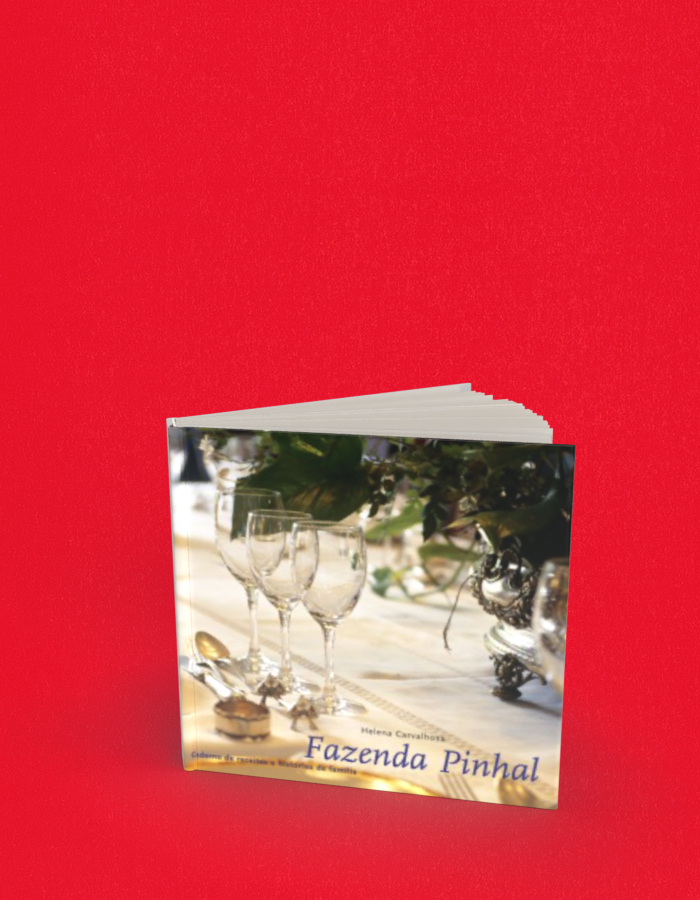

Fazenda Pinhal receitas e histórias
A compra acontece no site da livraria, em uma nova aba. Consulte lá os preços e a disponibilidade. Procure pelo título ou ISBN deste livro.
- Autoria / créditos
- Helena Carvalhosa (org.)
- Páginas
- 252
- Formato
- 23 x 23 cm
- Acabamento
- brochura
Sobre o livro
A Fazenda Pinhal é um importante e lindo conjunto arquitetônico do início do século XIX, cuidadosamente restaurado por seus antigos proprietários. A casa grande, a senzala, o terreiro, a capela, a tulha, o pomar centenário, tudo é precioso e... sorte nossa, tombado pelo Patrimônio Histórico!
Depois de saborear as deliciosas receitas servidas no Pinhal, muitos dos hóspedes deixavam suas receitas prediletas num caderno organizado por Helena Carvalhosa, bisneta dos condes do Pinhal. Para nosso deleite, ela selecionou mais de 200 receitas de amigos e da família e as publicou neste livro, junto a diversos relatos sobre a vida de antigamente no meio rural.
Helena Carvalhosa é artista plástica. Bisneta dos condes do Pinhal que levantaram a fazenda do Pinhal, deve-se em boa parte a ela o cuidado e a sensibilidade com que tudo foi restaurado e preservado. Como artista plástica, suas obras já foram mostradas em museus como a Pinacoteca do Estado e o Museu Afro, em espaços culturais como os do Sesc Pompeia e da Aliança Francesa de São Paulo. Pela Terceiro Nome, ela também é autora dos livros Ócio e Pulo do Gato .
← Voltar ao catálogo